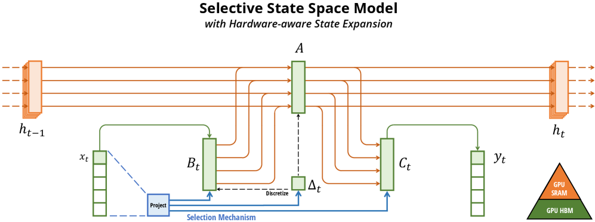
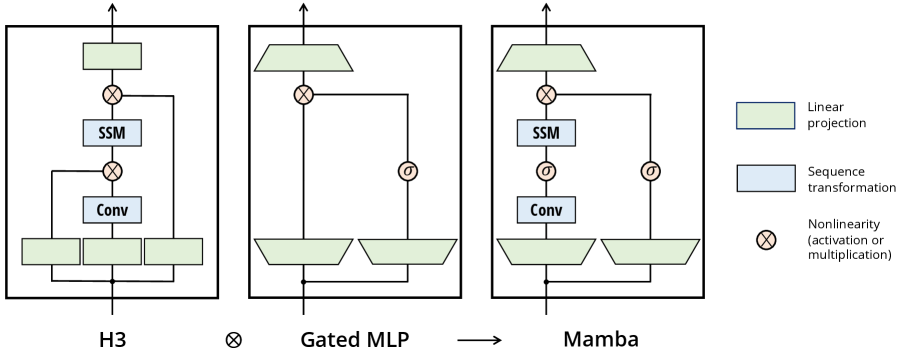

发展脉络
现代架构围绕三个瓶颈演进：注意力的长度复杂度、稀疏专家的计算/通信、以及多模态和状态空间的统一表示。
标准 Softmax 注意力每加一个 token 都要和前面所有 token 算一遍相似度，复杂度是 $O(n^2)$——上下文翻倍，计算量翻四倍。线性注意力把 Softmax 拆掉，用一个固定大小的「记忆状态」替代历史 KV，复杂度降到 $O(n)$，但记忆容量有限、长程召回差。2024-2026 的主线就是：怎么把线性层的便宜和 Softmax 层的精准结合起来，造出「又快又准」的混合架构。
把注意力想象成「翻笔记本找信息」。Softmax 注意力是每次都把整本笔记本从头翻到尾——精准但越翻越慢。线性注意力则把笔记本压缩成一张固定大小的「记忆卡片」，每来一个新词就往卡片上叠加信息——快但记不下太多东西。混合架构则是在一摞层里大部分用「卡片」，只留少数几层翻「完整笔记本」，兼顾速度和精准。
标准 Transformer 的注意力层在处理长度为 $n$ 的序列时，需要计算一个 $n \times n$ 的注意力矩阵——每个 token 都要和其他所有 token 算一次相似度。这意味着计算量和显存都随长度平方增长：
上下文从 4K 涨到 32K，注意力计算量就涨 64 倍。更关键的是 KV Cache 的线性增长——每多一个 token，就要多存一份 K 和 V，长文本场景下缓存占用甚至超过模型权重本身（详见 KV Cache 原理与优化）。
线性注意力的核心思路是：能不能不保留所有历史，而是把它们压缩成一个固定大小的「状态矩阵」$S$？每来一个新 token，只需要更新这个状态、再从状态里读出结果，计算量就变成了 $O(n)$：
这里去掉了 Softmax，直接用外积 $v_t k_t^\top$ 累加到状态上。由于矩阵乘法的结合律，$S_t$ 可以递推更新，不需要回看历史——这就是线性复杂度的来源。
把两者的取舍放在一张表里，能更清楚地看到为什么"混合"成为共识：
| 维度 | Softmax 注意力 | 线性注意力 / SSM |
|---|---|---|
| 单步复杂度 | $O(n\cdot d)$（Decode 阶段） | $O(d^2)$（固定状态读写） |
| 全序列复杂度 | $O(n^2\cdot d)$ | $O(n\cdot d^2)$ |
| 显存占用 | 随上下文线性增长（KV Cache） | 固定大小的状态，与长度无关 |
| 长程召回 | 精确（直接 attend 任意历史） | 近似（受固定状态容量限制） |
| 训练并行性 | 天然高度并行（$n\times n$ 矩阵） | 需分块并行 / 并行扫描才能并行 |
| 适合场景 | 需精确长程依赖、检索 | 超长序列、低延迟流式解码 |
线性注意力的递推形式 $S_t = S_{t-1} + v_t k_t^\top$ 也可以写成"整段一次算"的矩阵形式（利用结合律），下面这段 PyTorch 展示了这两种视角其实是同一个东西——整段版本适合训练，递推版本适合流式推理：
import torch
def linear_attention_full(Q, K, V):
# 整段矩阵形式：S = sum_t v_t k_t^T，再 S q_t
# Q,K,V: [B, n, d]，这里用特征维度 d 当作 k/v 维
S = torch.einsum('bnd,bnm->bdm', V, K) # S = sum_t v_t k_t^T -> [B, d, d]
O = torch.einsum('bnd,bdm->bnm', Q, S) # O_t = S q_t -> [B, n, d]
return O
def linear_attention_recurrent(x, W_k, W_v, W_q):
# 流式递推版本：每来一个 token 只更新固定状态 S
d = W_q.shape[0]
S = torch.zeros(d, d) # 固定大小记忆状态
outs = []
for t in range(x.shape[0]):
k = W_k @ x[t]; v = W_v @ x[t]; q = W_q @ x[t]
S = S + torch.outer(v, k) # 累加，不回看历史
outs.append(S @ q)
return torch.stack(outs)上一节我们把注意力改写成 $S_t = S_{t-1} + v_t k_t^\top$、$o_t = S_t q_t$，一句话带过了「去掉 Softmax」。但删掉 Softmax 绝不只是一个操作——Softmax 身上的「归一化」职责也一并被删掉了，而这个职责必须有人顶上。
先回忆 Softmax 在标准注意力里做了什么：它把一行分数变成和为 1 的非负权重。两个性质缺一不可——非负（注意力权重不会互相抵消）和和为 1（输出是与序列长度无关的加权平均）。线性注意力里，$o_t = \sum_i (q_t \cdot k_i)\, v_i$，权重就是 $q_t \cdot k_i$：
后者是最致命的问题。算一笔账：设每个 $q_t \cdot k_i \approx 0.5$（示意值），4 个 token 时权重和为 2.0，输出被放大 2 倍；100 个 token 时权重和为 50，放大 50 倍；序列到 4096 时放大约 2000 倍。不处理的话，输出尺度随长度线性暴涨，几层之后数值直接溢出。
标准修法是除一个动态归一化因子：把权重和也算出来，然后除以它。注意这个权重和可以写成：
也就是说，归一化分母只需要维护一个 $d$ 维的「键累加向量」$z_t$，随序列一起递推更新。于是完整的归一化线性注意力变成：
两个状态对象——$S$（$d\times d$，存「值乘键」）和 $z$（$d$，存「键」）——配合一个标量除法，就把 Softmax 的两条职责都补了回来。这正是 Katharopoulos 等人在 2020 年的论文里提出的归一化形式，也是绝大多数后续线性注意力工作的起点。
但除法也引入了新的不稳定性，见下一节的数值账。这里先记住结论：线性注意力不是「删掉 Softmax」，而是「拆掉 Softmax 并手工重造它的归一化」——多维护一个 $z_t$，多一次除法，数学上才站得住。
归一化补上了「和为 1」，但「非负」这条仍然补不上——除非对特征做特殊处理。这一节算两笔具体的数值账，看清线性注意力的两个隐性雷区。
假设当前 Query 与 10 个历史 Key 的点积分别是 $0.4$（5 个）和 $-0.4$（5 个）。标准 Softmax 注意力里，这 10 个权重都是正数，输出稳稳落在各 Value 之间；而线性注意力里：
分子分母同时趋近 0，$0/0$ 在浮点里直接得到 NaN。即使不到 0，分母很小也会把输出放大到天文数字。修法有两个：一是用正特征映射把 $q,k$ 变成非负（如 $\text{elu}(x)+1$，保证内积恒正）；二是像 Mamba 那样给状态加衰减门控，让负相关被时间冲淡。前者从源头保证分母有下界，后者靠遗忘控制尺度。
没有门控时，$S_t = S_{t-1} + v_t k_t^\top$ 是一个永不停歇的累加。若 $v$、$k$ 的分量大致在 1 附近，$n$ 个 token 之后 $S$ 的元素量级约 $\sqrt{n}$ 到 $n$——序列到 32K 时，状态范数可以比刚初始化时大 100 倍以上。这带来两个后果：
把这两笔账放在一起，结论很清晰：朴素线性注意力是一个「数学上漂亮、数值上脆弱」的构造——正向推导（结合律）给了它 $O(n)$ 的速度，但 Softmax 留下的归一化和非负性缺口，必须在特征映射、门控衰减、状态缩放三者里至少选一样补齐，才能稳定训练。这也是从 Mamba 到 Gated DeltaNet 到 KDA 一路演进的大背景：每一代都在修补这两笔账中的某一笔，同时尽量保住 $O(n)$ 的便宜和固定显存。
状态空间模型（SSM）是线性注意力的「近亲」，起源于控制论中的连续时间状态空间方程。Mamba 把它变成了语言建模的有力竞争者，核心创新是选择性机制。
Mamba 论文的第一张图（Figure 1）是理解「选择性」为什么必要的最快入口。这张图把 SSM 的内部运作拆成三块：输入 $x$ 的每个通道（channel，图上画了 5 个）、更高维的隐状态 $h$（图上画了 4 维）、以及输出 $y$。它的核心信息是：SSM 要在一个隐状态里同时承载「很多通道 × 每个通道的高维状态」——如果老老实实把全部状态物化出来，显存直接爆炸；早期的 SSM 靠「参数不随时间变」这个约束，用数学技巧绕开物化。Mamba 的关键改动就是图里那句「our selection mechanism adds back input-dependent dynamics」——让参数随输入变化，重新引入了输入依赖的动态，代价是必须设计硬件感知算法，只在 GPU 内存层级的高效层里物化扩展后的状态。

早期的 SSM（如 S4）是时不变的——状态转移矩阵 $A$ 不随输入变化，模型无法根据内容决定记住什么、忘掉什么。这就像一张只能匀速褪色的卡片，重要信息和无关信息以同样的速度消退。
Mamba（arXiv:2312.00752）的关键突破是选择性 SSM：让参数 $B$、$C$ 和门控 $\Delta$ 成为输入的函数，使模型能根据当前 token 决定记住或遗忘什么：
其中 $\bar{A}_t, \bar{B}_t$ 是通过离散化从连续参数导出的，且都依赖于输入 $x_t$。当模型遇到重要信息时，可以选择「大门打开」快速写入；遇到无关内容时，「大门关闭」保持状态不变。这直接对标了 Softmax 注意力的内容寻址能力。
但选择性带来了工程难题：参数变成输入相关的后，就不能再用高效的卷积模式了。Mamba 的解法是设计了一套硬件感知的并行扫描算法，在 GPU 上高效地递推计算。最终 Mamba-3B 在语言建模上超越了同规模的 Transformer，推理吞吐量比 Transformer 高 5 倍。
Mamba 论文的另一张图（Figure 3）展示的是「Mamba 块」长什么样——它是理解「Mamba 到底替换了什么」的关键。图里比较了三条路：H3 块（早期 SSM 架构的基座）、现代网络的 MLP 块、以及 Mamba 块。结论是：Mamba 块不是发明新结构，而是把「SSM 主分支 + 门控激活」和「MLP 块」合并成一个均匀重复的块——它不像 H3 那样把两个块交错堆叠，而是同构地重复同一种块，因此工程实现更简单。相比 MLP 块，它只是在主分支上加了一个选择性 SSM。

新手读这张图抓住一条主线即可：「Mamba 块 = 一条主分支（输入 → SSM → 线性变换 → 输出）+ 一条旁路（输入 → 激活函数 → 门控乘回主分支）。主分支上的 SSM 就是前面讲的状态递推 $h_t = \bar{A}_t h_{t-1} + \bar{B}_t x_t$；旁路的激活函数用 SiLU（也叫 Swish），它替代了 H3 块里的乘法门。整体看，Mamba 块做的还是「把输入变换成输出」这件事，只是这个变换里藏着一个会选择性记忆和遗忘的线性递归状态——这就是它能在保持线性复杂度的同时做内容感知推理的架构基础。
Mamba-2（arXiv:2405.21060）的最大贡献是理论层面的——它揭示了 SSM 和注意力之间的数学对偶关系（State Space Duality, SSD）：
序列变换可视为与一个结构化半可分矩阵相乘，天然有 $O(n)$ 的递推算法——快但无法并行。
同一个矩阵也能用 $O(n^2)$ 的密集注意力算法计算——慢但高度并行，适合 GPU。
SSD 框架说明两者不是对立的范式，而是同一个数学结构的两种算法。Mamba-2 据此设计了分块算法，在保持递推性质的同时利用更大的状态维度（从 16 扩展到 256），核心层比 Mamba-1 快 2-8 倍。更重要的是，这个对偶框架把线性注意力、门控卷积、SSM 统一到了同一面旗帜下。
线性注意力（Katharopoulos et al., 2020）的递推形式为：
而 SSM 的递推形式为：
当 $A_t = I$（单位矩阵）时，SSM 退化为线性注意力的直接累加。Mamba 引入的 $A_t \neq I$ 相当于在累加时加了一个衰减因子——让旧信息逐渐淡出，为新信息腾出空间。这就是 SSM 比朴素线性注意力召回更好的关键：它不是「永远记住」，而是「有策略地遗忘」。
Gated DeltaNet 和 KDA 在此基础上进一步细化了遗忘的粒度，从「整体遗忘」（Mamba 的头级门控）走向「逐通道遗忘」（KDA 的通道级门控），让记忆管理越来越精细。
朴素线性注意力只会「累加」，信息越堆越多直到溢出。Delta 规则家族的核心改进是：新信息进来时，先擦掉状态里和新 key 重叠的旧内容，再写入——就像在笔记本上先擦掉要修改的那行，再写新内容，而不是在旧字上面叠着写。
DeltaNet 把朴素累加改成了Delta 规则更新：
这就像在一个关联记忆网络里做在线学习——新 key 进来时，先把状态里和它重叠的部分减掉，再写入新的 key-value 关联。更新更精准，但 DeltaNet 没有主动遗忘机制——一旦信息写入，只能被新信息覆盖，无法主动清空。
Gated DeltaNet（GDN，arXiv:2412.06464）发现门控和 Delta 规则是互补的：
GDN 把两者结合，用一个头级的遗忘门 $\alpha_t$ 控制状态的保留比例：
把这条递推写成可运行的 PyTorch，能看清"门控衰减"和"Delta 精准更新"是怎么在同一行里配合的（这里用标量 $\alpha_t, \beta_t$ 做示意，实际是头级/通道级的向量）：
import torch
def gated_delta_step(S, k, v, q, alpha, beta):
# S: [d, d] 记忆状态；k,v,q: [d]；alpha,beta: 标量门控
kv = torch.outer(v, k) # 新关联 v k^T
delta = beta * kv # Delta 规则：待写入量
S = alpha * S + delta # 先按 alpha 衰减，再精准更新
return S, S @ q # 返回新状态与本步输出
# 流式调用：每来一个 token 只做一次 O(d^2) 的状态更新
S = torch.zeros(d, d)
for t in range(seq_len):
S, o_t = gated_delta_step(S, k[t], v[t], q[t], alpha_t[t], beta_t[t])实验上，GDN 在语言建模、常识推理、上下文检索、长度外推和长上下文理解等多个基准上全面超越 Mamba-2 和 DeltaNet。NVIDIA/MIT 团队还开发了分块并行算法，让 GDN 在保持递推性质的同时能 GPU 友好地并行训练。
Kimi Delta Attention（KDA，arXiv:2510.26692）是 Kimi Linear 架构的核心模块，在 GDN 基础上把遗忘门从头级细化到通道级：
| 机制 | 遗忘粒度 | 类比 |
|---|---|---|
| Mamba-2 | 头级（整个头一个门控） | 「整本书留着或扔掉」 |
| Gated DeltaNet | 头级（同上） | 「整页留着或撕掉」 |
| KDA | 通道级（每个特征维度独立遗忘率） | 「每个知识点单独决定留不留」 |
更精细的门控让模型能更有效地利用有限的固定状态内存——重要的特征维度可以长久保留，不重要的快速遗忘。Kimi Linear 用 KDA + MLA（Multi-Head Latent Attention，见 注意力变体全景）的逐层混合，训了一个 3B 激活 / 48B 总参数的模型，结果在相同训练配方下全面超越纯 MLA 架构，KV Cache 减少高达 75%，1M 上下文解码吞吐量提升最高 6 倍。
「状态容量有限」这句话经常出现，但到底「有限」到什么程度？把状态矩阵当键值记忆来算一笔账，会得到非常直观的结论。
线性注意力的状态 $S$ 是 $d_v \times d_k$ 的矩阵，它通过累加 $v_t k_t^\top$ 写入信息。矩阵论里有个基本事实：$n$ 个秩 1 矩阵的和，其秩最多是 $\min(n, d)$，而实际有效秩通常远小于这个上界。换句话说，要可靠地记住 $M$ 条互不相关的事实，状态的有效秩大致要 ≥ $M$。
把数字代进去。设 $d_k = d_v = 256$，状态矩阵有 65536 个浮点数。如果一篇文档里有 100 条值得记住的事实，它们被压缩进这 65536 个数里；而一条 1M token 的上下文，包含的「关键事实」可能数以千计——远远超出状态有效秩能支撑的量级。于是不可避免的结果是：新写入的事实会覆盖旧事实，越早的信息越先被「洗掉」。这和人的记忆很像：固定容量的记忆，塞的东西越多，忘得越快；区别只在于模型没有「复习」这一说，只能靠门控和更新规则来做有限的取舍。
对比一下标准 Softmax 注意力：它的 KV Cache 大小随序列线性增长，1M token 就存 1M 组 K/V——记忆容量跟着上下文走，理论上没有上限（只是显存很贵）。线性注意力的状态则是「无论多长都只有一张卡片」。这是两种架构最本质的差别：一个是记忆随输入增长，一个是记忆固定、靠调度复用。
明白了这一点，你就能理解为什么 2024 年后的混合架构要用「线性层为主 + 少量 Softmax 层」：线性层负责处理海量但低价值的局部信息（便宜），Softmax 层负责保留需要精确召回的关键信息（精准）。把「记忆容量」这个维度加进选型，比单纯比较速度更有指导意义——毕竟一个「很快但记不住东西」的模型，在检索类任务上价值有限，而这类任务恰恰是大模型最常被派上的用场。
纯线性架构虽然快，但有限状态容量是根本瓶颈——无论门控多精细，固定大小的状态在理论上就难以做到像 Softmax 那样的精确长程召回。2024-2026 的共识是：不要全用线性，也不要全用 Softmax，而是混合。
| 模型 | 混合方式 | 特点 |
|---|---|---|
| Jamba（AI21） | Mamba 与 Transformer 层交替 + MoE | 首个大规模混合架构，52B 总参数 / 12B 激活，256K 上下文 |
| GDN-Hybrid | Gated DeltaNet + 少量滑动窗口注意力 | GDN 论文提出的混合方案，兼顾训练效率与性能 |
| Kimi Linear | KDA 为主 + 少量 MLA 层 | 首次在公平对比下全面超越全 Softmax 架构 |
关键经验是Softmax 层不需要太多——在 30-60 层的网络里，通常只需 3-5 层全局 Softmax 注意力就能补上线性层缺失的长程召回能力，其余层全部用线性层省算力和显存。
线性层最大的工程挑战是：递推形式天然串行，怎么在 GPU 上高效并行训练？答案是分块并行（chunkwise parallel form）——把序列切成大小为 $C$ 的块，块内用矩阵乘法并行计算，块间用递推传递状态：
用密集矩阵乘法并行算出块内所有 token 的输出，充分利用 GPU 算力。
只递推传递每块的最终状态，串行开销从 $O(n)$ 降到 $O(n/C)$。
把"分块"的时序画出来：序列先按块切分，块内用大矩阵乘并行算，只在块与块之间串行传递一个状态向量——这一步串行的开销被块大小 $C$ 摊薄了。
设线性递推为 $s_t = A_t s_{t-1} + B_t x_t$（对角/结构化 $A_t$ 时成立）。把序列切成大小为 $C$ 的块，对第 $c$ 块，块首状态为 $s_{cC}$。块内第 $i$ 个位置（$0\le i < C$）的状态可由关联累加得到：
关键是乘积 $\prod A$ 和求和项都满足结合律，因此块内所有位置可以用一次 GPU 友好的关联扫描（prefix scan / 矩阵多项式）并行算出，块与块之间只需传递块末状态 $s_{(c+1)C}$。当块内用大矩阵乘、块间只传一个 $d\times d$ 状态时，硬件利用率接近 Softmax 层，而推理仍保持 $O(1)$ 单步延迟。
Mamba-2 的 SSD 框架正是把这个思想系统化：把 SSM 写成"结构化半可分矩阵"，块内用稠密矩阵、块间用低秩递推，从而同时拿到线性层的 $O(n)$ 与 GPU 的并行度。
这套方案让 GDN、KDA 等线性层在训练时接近 Softmax 的硬件利用率，推理时则保持 $O(1)$ 的单步延迟和固定显存——这是混合架构能落地的工程基础。
本章关注 Transformer 之后的架构选择：稀疏专家、线性/状态空间模型、长上下文、多模态和扩散语言模型。重点是理解每种方法改变了哪一层约束。
阅读提示：比较新架构时同时看训练目标、权重兼容性、推理状态和硬件实现；只看理论复杂度很容易得出错误结论。
MoE 路由、容量因子和负载均衡的经典介绍，适合建立稀疏激活的共同语言。
选择性状态空间模型的代表作，解释线性扫描、选择机制和长序列效率之间的关系。
用较少 KV 头降低推理带宽和缓存开销，是理解 MQA/GQA 工程取舍的直接来源。
ViT 将图像 patch 化并交给 Transformer，帮助理解多模态视觉编码器的基本范式。
以 LLaDA 为代表的扩散语言模型工作，适合和自回归模型对照并识别当前研究边界。
资料优先选用原始论文、官方文档、大学课程和公共机构材料；链接按 2026-08-10 检索，具体版本以来源页面为准。
现代架构围绕三个瓶颈演进：注意力的长度复杂度、稀疏专家的计算/通信、以及多模态和状态空间的统一表示。
比较架构时固定记录参数量、激活参数量、路由粒度、通信模式、缓存语义和训练目标，避免只按模型名称或榜单排序。
稀疏化通常以路由不均衡和通信换取 FLOP 节省；长上下文和多模态则会把瓶颈转移到数据、显存或对齐层。
MoE、线性/混合注意力、视觉语言模型和扩散语言模型仍处于快速演进期，应明确哪些结论已稳定、哪些只在特定规模成立。
能从核技巧、递归状态和归一化解释线性注意力的复杂度收益，以及负权重、状态漂移和召回退化风险。
先修 Transformer 架构、注意力和基本张量 shape；建议同时打开对应的架构图核对数据流。
对 seq=32、dim=16 实现同一线性注意力的并行式与递归式，比较逐 token 输出；随后把序列扩到 1024，记录状态范数、延迟和峰值内存。
短序列两种实现最大绝对误差小于 1e-5；能画出状态更新式并展示一个状态范数失控或远距离召回失败的可复现样例。